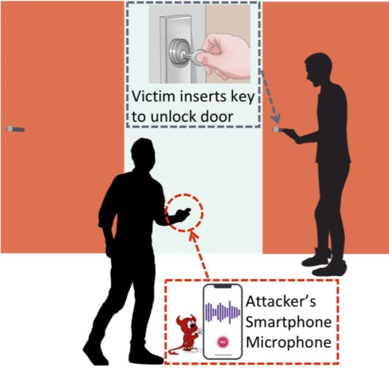

Arpitha Vinod arpithav@teenhacksli.com
Amanda Wang amanda@teenhacksli.com
Is humming obnoxiously while unlocking your front door just as important as just having a lock for your front door? The answer is a definite yes - hackers can now break into your house just by hearing your key being placed inside of a lock.
SpiKey is the name of this attack model developed by security researchers at the National University of Singapore where hackers can duplicate your key just by listening to the key being placed and turned inside of a lock. Everytime a person unlocks their front door with a physical key, the key produces a small sound . If a hacker were able to record this sound, they would have all the information necessary to create duplicates of this key.
So how does this work? The sound that the key emits is specifically the sound made by the lock pins as they move over the ridges of the key. When a victim inserts their key into the lock, a hacker can walk by and record the sound. This sound recording is then paired with signal processing technology, which uses the time between the clicks to determine the “adjacent inter-ride distances”, or the distance between the ridges of the key. From this, the bitting depths of the key- the shape of the key- can be inferred which can then be converted into a computer model ready to be 3-D printed.
Of course, seeing a person hiding out in your bush recording you as you unlock your front door might be a tad suspicious. That is why SpiKey does not require a physical attack - if a hacker were able to install malware onto your smart doorbell, phone, or even smart watch, audio can be recorded without the victim knowing and the hacker can listen from afar. For example, Amazon’s Ring security cameras have been easily hacked in the past. By hacking into the security camera, hackers can get access into the microphone embedded into it to record the sound.
However, there are some limitations of the SpiKey technique in the real world. For starters, the speed at which the key is placed into the lock is assumed to be constant, and the hacker needs to know exactly which type of lock the victim has. Nevertheless, SpiKey is still very accurate- the research team at Singapore conducted a simulation based on real-world recordings where when 330,000 potential keys to a lock were given, SpiSkey narrowed it down to “three candidate keys for the most frequent case.” So who cares if you are a bad singer? It might be the most important way to prevent you from getting hacked.